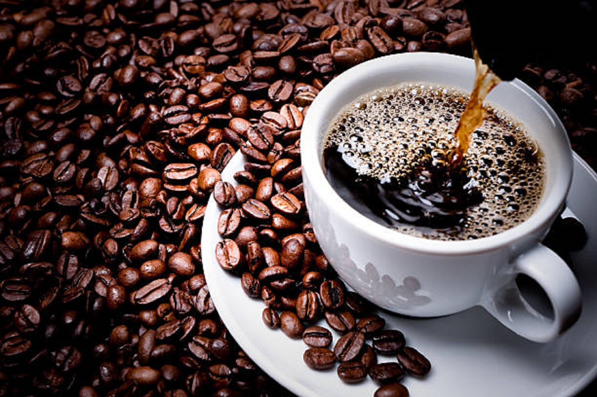

| Black Coffee | ||
|---|---|---|
| While many coffee lovers prefer their coffee with generous amounts of milk and sugar, some prefer theirs completely straight. This is referred to as black coffee. Black coffee is arguably the most common type of coffee drink. Its popularity can be mainly attributed to how easy it is to make this beverage, be it drip, pour-over, French press, or anything else. Black coffee is usually served with no add-ins. |
 | |
| Main page | ||
| Espresso | ||
| Latte | ||